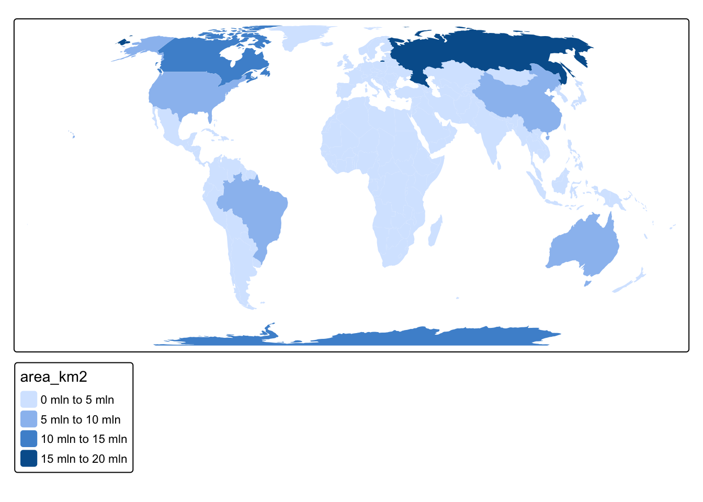
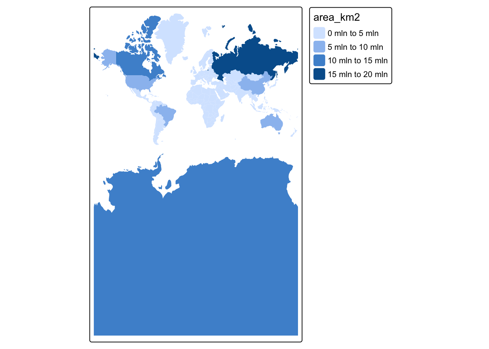
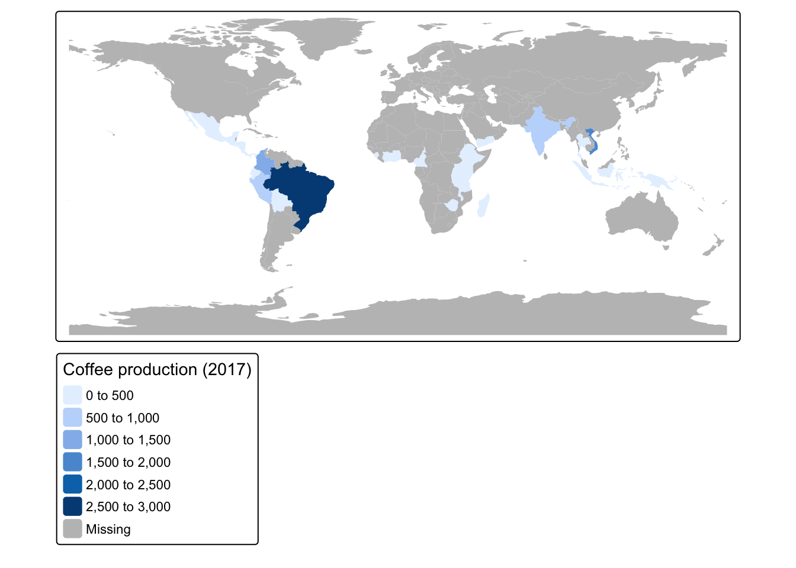
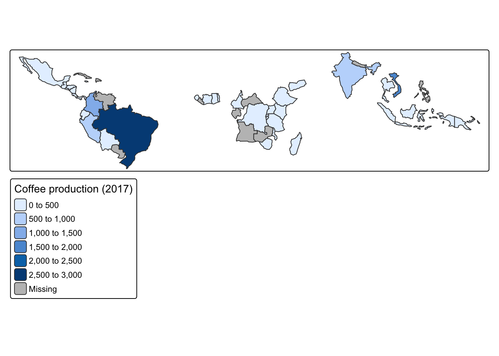

install.packages("spData")
Source Materials
The following materials are modified from Chapter 3 of Geocomputation with R and the tmap book.
In this lab, we’ll explore the basics of manipulating vector data in R using the sf package.
1. Set up
Install a new package to take advantage of some preloaded data.
Let’s load all necessary packages:
rm(list = ls())
library(sf) # for handling vector data
library(tmap) # for making maps
library(tidyverse) # because we love the tidyverse
library(spData) # preloaded spatial data2. Simple features in sf
Simple features is a hierarchical data model that represents a wide range of geometry types. The sf package can represent all common vector geometry types:
- points
- lines
- polygons
- and their respective ‘multi’ versions
sfprovides the same functionality that the sp, rgdal, and rgeos packages provided, but is more intuitive because it builds on the tidy data model and works well with the tidyverse. sf represents spatial objects as “simple feature” objects by storing them as a data frame with the geographic data stored in a special column (usually named geom or geometry).
Simple features from scratch
Let’s start by looking at how we can construct a sf object. Typically we will load sf objects by reading in data. However, it can be helpful to see how sf objects are created from scratch.
First, we create a geometry for London by supplying a point and coordinate reference system.
# create st_point with longitude and latitude for London
# simple feature geometry
london_point <- st_point(c(0.1, 51.5))
# add coordinate reference system
# simple feature collection
london_geom <- st_sfc(london_point, crs = 4326)Then, we supply some non-geographic attributes by creating a data frame with attributes about London.
# create data frame of attributes about London
london_attrib <- data.frame(
name = "London",
temperature = 25,
date = as.Date("2017-06-21")
)And we attach the simple feature collection and data frame to create a sf object. Check out the class of the new object we created.
# combine geometry and data frame
# simple feature object
london_sf <- st_sf(london_attrib, geometry = london_geom)
# check class
class(london_sf)[1] "sf" "data.frame"We can also check out what the CRS looks like:
st_crs(london_sf)Coordinate Reference System:
User input: EPSG:4326
wkt:
GEOGCRS["WGS 84",
ENSEMBLE["World Geodetic System 1984 ensemble",
MEMBER["World Geodetic System 1984 (Transit)"],
MEMBER["World Geodetic System 1984 (G730)"],
MEMBER["World Geodetic System 1984 (G873)"],
MEMBER["World Geodetic System 1984 (G1150)"],
MEMBER["World Geodetic System 1984 (G1674)"],
MEMBER["World Geodetic System 1984 (G1762)"],
MEMBER["World Geodetic System 1984 (G2139)"],
ELLIPSOID["WGS 84",6378137,298.257223563,
LENGTHUNIT["metre",1]],
ENSEMBLEACCURACY[2.0]],
PRIMEM["Greenwich",0,
ANGLEUNIT["degree",0.0174532925199433]],
CS[ellipsoidal,2],
AXIS["geodetic latitude (Lat)",north,
ORDER[1],
ANGLEUNIT["degree",0.0174532925199433]],
AXIS["geodetic longitude (Lon)",east,
ORDER[2],
ANGLEUNIT["degree",0.0174532925199433]],
USAGE[
SCOPE["Horizontal component of 3D system."],
AREA["World."],
BBOX[-90,-180,90,180]],
ID["EPSG",4326]]st_crs(london_sf)$IsGeographic[1] TRUEst_crs(london_sf)$proj4string[1] "+proj=longlat +datum=WGS84 +no_defs"Existing sf object
Now let’s look at an existing sf object representing countries of the world:
world <- spData::world
class(world)[1] "sf" "tbl_df" "tbl" "data.frame"dim(world)[1] 177 11names(world) [1] "iso_a2" "name_long" "continent" "region_un" "subregion" "type"
[7] "area_km2" "pop" "lifeExp" "gdpPercap" "geom" We can see that this object contains both spatial data (geom column) and attributes about those geometries. We can perform operations on the attribute data, just like we would with a normal data frame.
summary(world$lifeExp) Min. 1st Qu. Median Mean 3rd Qu. Max. NA's
50.62 64.96 72.87 70.85 76.78 83.59 10 The geometry column is “sticky”, meaning it will stick around unless we explicitly get rid of it. For example, dplyr’s select() function won’t get rid of it.
world_df <- world %>%
select(-geom) #doesn't actually remove the geom column
colnames(world_df) # geom still shows up as a column [1] "iso_a2" "name_long" "continent" "region_un" "subregion" "type"
[7] "area_km2" "pop" "lifeExp" "gdpPercap" "geom" To drop the geom column and convert this sf object into a data frame, we need to drop the geometry column using the st_drop_geometry().
world_df <- st_drop_geometry(world)
class(world_df)[1] "tbl_df" "tbl" "data.frame"names(world_df) [1] "iso_a2" "name_long" "continent" "region_un" "subregion" "type"
[7] "area_km2" "pop" "lifeExp" "gdpPercap"ncol(world)[1] 11ncol(world_df)[1] 10sf syntax
Note that all functions in the sf package start with the prefix st_ NOT sf_. Why? st_ stands for “spatiotemporal” as in data that varies in space and time.
3. Coordinate reference systems and projections
R handles coordinate reference systems using multiple formats:
- an identifying string specifying the authority and code such as
EPSG:4325- these need to be passed as strings
sfwill accept the four digit code as an integer
proj4stringsare now outdated, but you might see them around- for example,
+proj=longlat +ellps=WGS84 +datum=WGS84 +no_defs
- for example,
Reprojecting data
In some cases we will be working with data which is represented with different coordinate reference systems (CRS). Whenever we work with multiple spatial data objects, we need to check that the CRSs match.
Let’s create another sf object for London, but now represented with a project coordinate system.
london_proj = data.frame(x = 530000, y = 180000) %>%
st_as_sf(coords = c("x", "y"), crs = "EPSG:27700")We can check the CRS of any data using the st_crs() function.
st_crs(london_proj)Coordinate Reference System:
User input: EPSG:27700
wkt:
PROJCRS["OSGB36 / British National Grid",
BASEGEOGCRS["OSGB36",
DATUM["Ordnance Survey of Great Britain 1936",
ELLIPSOID["Airy 1830",6377563.396,299.3249646,
LENGTHUNIT["metre",1]]],
PRIMEM["Greenwich",0,
ANGLEUNIT["degree",0.0174532925199433]],
ID["EPSG",4277]],
CONVERSION["British National Grid",
METHOD["Transverse Mercator",
ID["EPSG",9807]],
PARAMETER["Latitude of natural origin",49,
ANGLEUNIT["degree",0.0174532925199433],
ID["EPSG",8801]],
PARAMETER["Longitude of natural origin",-2,
ANGLEUNIT["degree",0.0174532925199433],
ID["EPSG",8802]],
PARAMETER["Scale factor at natural origin",0.9996012717,
SCALEUNIT["unity",1],
ID["EPSG",8805]],
PARAMETER["False easting",400000,
LENGTHUNIT["metre",1],
ID["EPSG",8806]],
PARAMETER["False northing",-100000,
LENGTHUNIT["metre",1],
ID["EPSG",8807]]],
CS[Cartesian,2],
AXIS["(E)",east,
ORDER[1],
LENGTHUNIT["metre",1]],
AXIS["(N)",north,
ORDER[2],
LENGTHUNIT["metre",1]],
USAGE[
SCOPE["Engineering survey, topographic mapping."],
AREA["United Kingdom (UK) - offshore to boundary of UKCS within 49°45'N to 61°N and 9°W to 2°E; onshore Great Britain (England, Wales and Scotland). Isle of Man onshore."],
BBOX[49.75,-9,61.01,2.01]],
ID["EPSG",27700]]This is a lot of information to read, so if we wanted to use this point with our other London point, we need to check to see if they are using the same CRS.
st_crs(london_proj) == st_crs(london_sf)[1] FALSETo transform the CRS of a dataset, we use the st_transform() function. In the crs argument, we need to specify the coordinate reference system. We can do this by either supplying a CRS code or specifying the CRS of another dataset using the st_crs() function.
london_sf_transform <- st_transform(london_sf, crs = st_crs(london_proj))Now if we check, the CRS between the two datasets should match
if(st_crs(london_sf_transform) == st_crs(london_proj)){
print("it's a match!")
} else {
print("still not a match")
}[1] "it's a match!"
Building beautiful workflows
Hopefully we’re already thinking about how we could build checking coordinate reference systems into our workflows.
For example, we could add code like the following that transforms the CRS of dataset2 to match dataset1 and prints out a warning message.
if(st_crs(dataset1) != st_crs(dataset2)){
warning("coordinate refrence systems do not match")
dataset2 <- st_transform(dataset1, crs = st_crs(dataset1))
}Changing map projections
Remember that whenever we make a map we are trying to display three dimensional data with only two dimensions. To display 3D data in 2D, we use projections. Which projection you use can have big implications for how you display information.
To the projection of our data, we could:
- reproject the underlying data
- or in
tmapwe can specify the projection we want the map to use
Let’s compare global maps using two different projections:
- Equal Earth is an equal-area pseudocylindrical projection (EPSG 8857)
- Mercator is a conformal cylindrical map that preserves angles (EPSG 3395)
tm_shape(world, projection = 8857) +
tm_fill(col = "area_km2")
tm_shape(world, projection = 3395) +
tm_fill(col = "area_km2")
4. Vector attribute subsetting
Often we’ll want to manipulate sf objects in the same ways as we might with tabular data in data frames. The great thing about the simple features data model, is we can largely treat spatial objects the same as data frames.
dplyr functions!
This means that we can use all of our favorite dplyr functions on sf objects – yay!
We can select columns…
world %>%
select(name_long, pop)Or remove columns…
world %>%
select(-subregion, -area_km2)Or select AND rename columns
world %>%
select(name = name_long, population = pop)Or filter observations based on variables
world1 <- world %>%
filter(area_km2 < 10000)
summary(world1$area_km2) Min. 1st Qu. Median Mean 3rd Qu. Max.
2417 4412 6207 5986 7614 9225 world2 <- world %>%
filter(lifeExp >= 80)
nrow(world2)[1] 24Chaining commands with pipes
Because we can use dplyr functions with sf objects, we can chain together commands using the pipe operator.
Let’s try to find the country in Asia with the highest life expectancy
world %>%
filter(continent == "Asia") %>%
select(name_long, continent, lifeExp) %>%
slice_max(lifeExp) %>%
st_drop_geometry()# A tibble: 1 × 3
name_long continent lifeExp
* <chr> <chr> <dbl>
1 Japan Asia 83.6Vector attribute aggregation
Aggregation is the process of summarizing data with one or more ‘grouping’ variables. For example, using the ‘world’ which provides information on countries of the world, we might want to aggregate to the level of continents. It is important to note that aggregating data attributes is a different process from aggregating geographic data, which we will cover later.
Let’s try to find the total population within each continent:
world %>%
group_by(continent) %>%
summarize(population = sum(pop, na.rm = TRUE)) %>%
st_drop_geometry()# A tibble: 8 × 2
continent population
* <chr> <dbl>
1 Africa 1154946633
2 Antarctica 0
3 Asia 4311408059
4 Europe 669036256
5 North America 565028684
6 Oceania 37757833
7 Seven seas (open ocean) 0
8 South America 412060811Let’s also find the total area and number of countries in each continent:
world %>%
group_by(continent) %>%
summarize(population = sum(pop, na.rm = TRUE),
area_km2 = sum(area_km2, na.rm = TRUE),
n_countries = n()) %>%
st_drop_geometry()# A tibble: 8 × 4
continent population area_km2 n_countries
* <chr> <dbl> <dbl> <int>
1 Africa 1154946633 29946198. 51
2 Antarctica 0 12335956. 1
3 Asia 4311408059 31252459. 47
4 Europe 669036256 23065219. 39
5 North America 565028684 24484309. 18
6 Oceania 37757833 8504489. 7
7 Seven seas (open ocean) 0 11603. 1
8 South America 412060811 17762592. 13Building on this, let’s find the population density of each continent, find the continents with highest density and arrange by the number of countries. We’ll drop the geometry column to speed things up.
world %>%
st_drop_geometry() %>%
group_by(continent) %>%
summarize(population = sum(pop, na.rm = TRUE),
area_km2 = sum(area_km2, na.rm = TRUE),
n_countries = n()) %>%
mutate(density = round(population/area_km2)) %>%
slice_max(density, n = 3) %>%
arrange(desc(n_countries))# A tibble: 3 × 5
continent population area_km2 n_countries density
<chr> <dbl> <dbl> <int> <dbl>
1 Africa 1154946633 29946198. 51 39
2 Asia 4311408059 31252459. 47 138
3 Europe 669036256 23065219. 39 295. Joins with vector attributes
A critical part of many data science workflows is combining data sets based on common attributes. In R, we do this using multiple join functions, which follow SQL conventions.
Let’s start by looking a data set on national coffee production from the spData package:
coffee_data <- spData::coffee_data
head(coffee_data)# A tibble: 6 × 3
name_long coffee_production_2016 coffee_production_2017
<chr> <int> <int>
1 Angola NA NA
2 Bolivia 3 4
3 Brazil 3277 2786
4 Burundi 37 38
5 Cameroon 8 6
6 Central African Republic NA NAIt appears that coffee_data contains information on the amount of coffee produced in 2016 and 2017 from a subset of countries.
nrow(coffee_data)[1] 47nrow(world)[1] 177The coffee production dataset does not include any spatial information, so If we wanted to make a map of coffee production, we would need to combine coffee_data with the world dataset. We do this by joining based on countries’ names.
world_coffee <- left_join(world, coffee_data, by = "name_long")
names(world_coffee) [1] "iso_a2" "name_long" "continent"
[4] "region_un" "subregion" "type"
[7] "area_km2" "pop" "lifeExp"
[10] "gdpPercap" "geom" "coffee_production_2016"
[13] "coffee_production_2017"And plot what this looks like…
tm_shape(world_coffee) +
tm_fill(col = "coffee_production_2017",
title = "Coffee production (2017)")
By using a left join, our previous result added the coffee production information onto all countries of the world. If we just wanted to keep countries that do have coffee data, we could use an inner join:
world_coffee_inner <- inner_join(world, coffee_data, by = "name_long")Let’s build ourselves a warning message to make sure we don’t lose any data because of incomplete matches.
if (nrow(world_coffee_inner) != nrow(coffee_data)) {
warning("inner join does not match original data. potential data loss during join")
}Warning: inner join does not match original data. potential data loss during
joinIt looks like we lost some countries with coffee data, so let’s figure out what’s going on. We can find rows that didn’t match using the setdiff() function.
setdiff(coffee_data$name_long, world$name_long)[1] "Congo, Dem. Rep. of" "Others" We see that one of the issues is that the two data sets use different naming conventions for the Democratic Republic of the Congo. We can use a string matching function to figure out what the DRC is called in the world data set.
# search for the DRC in the world dataset
drc <- stringr::str_subset(world$name_long, "Dem*.+Congo")Now we can update the coffee data set with the matching name for the DRC:
coffee_data$name_long[stringr::str_detect(coffee_data$name_long, "Congo")] <- drcAnd we can try the inner join again and hopefully the DRC now matches:
world_coffee_inner <- inner_join(world, coffee_data , by = "name_long")
# update warning message conditional to include the mismatch for "others"
if (nrow(world_coffee_inner) != nrow(coffee_data) & setdiff(coffee_data$name_long, world_coffee_inner$name_long) != "Others") {
warning("inner join does not match original data. potential data loss during join")
}Let’s visualize what a the inner join did to our spatial object.
tm_shape(world_coffee_inner) +
tm_polygons(fill = "coffee_production_2017",
title = "Coffee production (2017)") +
tm_layout(legend.outside = TRUE)
Critical thinking question
What happens if we left join a sf object onto a data frame?
coffee_world <- left_join(coffee_data, world, by = "name_long")
class(coffee_world)[1] "tbl_df" "tbl" "data.frame"names(coffee_world) [1] "name_long" "coffee_production_2016" "coffee_production_2017"
[4] "iso_a2" "continent" "region_un"
[7] "subregion" "type" "area_km2"
[10] "pop" "lifeExp" "gdpPercap"
[13] "geom" We end up with a data frame!